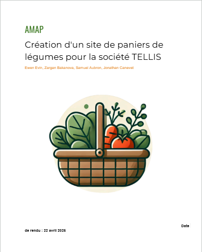
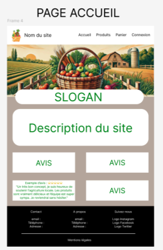
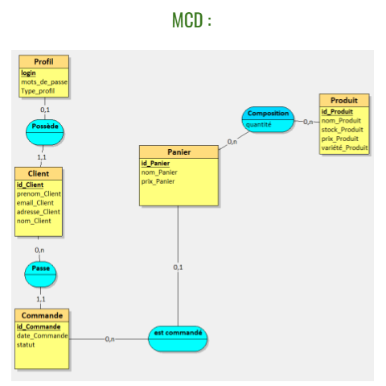

AP 2 · Site web de gestion de paniers de légumes · Société TELLIS
La société TELLIS, prestataire de services en ingénierie informatique depuis 1989, a confié à notre équipe le développement d'un site web pour la gestion des paniers AMAP (Association pour le Maintien de l'Agriculture Paysanne), destiné aux petites PME et associations agricoles.
Le site devait être développé sans CMS (ni WordPress ni PrestaShop), uniquement en PHP natif avec une base de données MySQL sous Laragon, puis déployé sur un espace IONOS via FileZilla. Le projet a été réalisé en équipe de quatre : Ewen Evin, Zargan Bakanova, Samuel Aubron et Jonathan Canevet.
J'ai pris en charge trois livrables clés du projet : la rédaction de la documentation technique, la conception de la maquette graphique et la modélisation de la base de données.

Rédaction du dossier projet complet pour la société TELLIS : contexte, cahier des charges, modélisation et spécifications fonctionnelles. Rendu le 22 avril 2026.

Conception sur Figma de la maquette de la page d'accueil : navigation, hero image, section avis clients et footer — avant le développement.

Conception du MCD avec les entités Profil, Client, Commande, Panier et Produit. Modélisation des relations (Possède, Passe, Composition, est commandé) et des cardinalités avant implémentation MySQL.